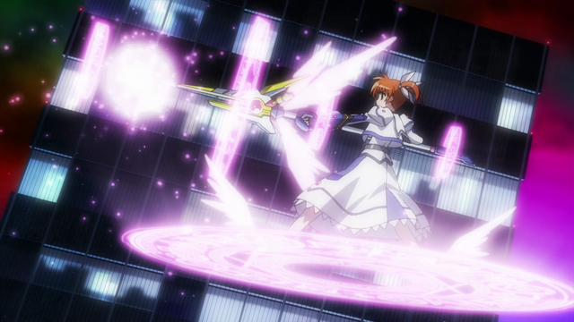
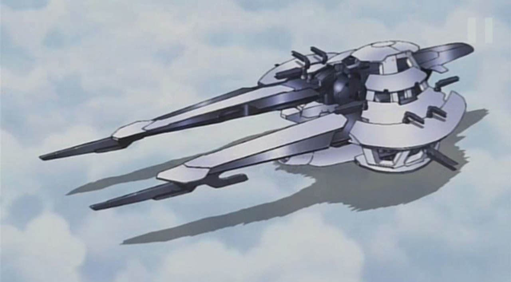

Les recommandations du Shoggoth
Mahou Shoujo Lyrical Nanoha
Un Magical Girl, un bon, un vrai
Nous allons donc ici nous atteler à un petit Magical Girl qui fait plaisir, j'ai nommé :
Mahou Shoujo Lyrical Nanoha
Certes, vous l'avez lu dans le titre, mais bon, effet dramatique un peu !
Diffusion : Automne 2004 - Automne 2005 - Printemps 2007 - Printemps 2015
Format : 4 saisons :
- Mahou Shoujo Lyrical Nanoha (ici) : 13 épisodes
- Mahou Shoujo Lyrical Nanoha A's (là) : 13 épisodes
- Mahou Shoujo Lyrical Nanoha StrikerS (par là-bas) : 26 épisodes
- Mahou Shoujo Lyrical Nanoha ViVid (par ici) : 12 épisodes
Je vais traiter ici uniquement de la première saison, si vous avez vu cette saison vous saurez qu'il ne faut pas vous arrêter !
Genres : Action, Comédie, Drame, Magie
Synopsis :
Nanoha Takamachi, 9 ans, élève de CE2 dans la petite ville d'Uminanri, était sur le chemin de l'école quand tout à coup, elle entend une voix l'appeler à l'aide, et tombe sur un furet blessé dans un parc. Il s'avère que ce n'était pas un furet comme un autre, mais Yuuno Scraya un archéologue et mage venu d'un autre monde pour récupérer de dangereux artefacts éparpillés sur la Terre par sa faute, les Jewel Seeds trop faible après s'être fait attaqué à cause de ces gemmes, il confie à Nanoha une perle, Raising Heart, lui permettant de gagner des pouvoirs, et ainsi l'aider à sauver la Terre. Mais il s'avère que Nanoha et Yuuno ne sont pas les seuls à en avoir après les Jewel Seeds quand une certaine Fate Testarossa fait son apparition.
En soi, on pourrait se dire :
"Ouais, c'est juste un Magical Girl Shoujo tout ce qu'il y a de plus classique et chiant n'est-ce pas ?"
Et justement, non. Séparément, chaque élément est très caractéristique du genre, mais c'est la manière dont le tout est monté qui fait prendre toute sa saveur à l'anime.
Je m'explique. On a un setup standard, une petite fille, un animal qui parle, sauver le monde par pur altruisme/pour sauver sa peau, une famille et des amis aimants ... 'fin bref, du vu et revu dans le genre. Mais à partir du moment ou l'antagoniste de cette première saison, Fate, intervient, on change de registre.
On a un ton qui s'assombrit, Nanoha, toujours essayant d'aider son prochain (altruisme de niveau suprême !), tente d'apporter son aide, de comprendre son adversaire et tente de s'en faire une amie plutôt que de la combattre, ce à quoi Fate ne prête aucune attention, réunissant les Jewel Seeds pour sa mère.
La rivalité entre Nanoha et Fate est plutôt intense ...
Et là, on touche le point fort de l'anime : les personnages. Parce que oui derrière ses airs de Magical Girl standard, on trouve des personnages vraiment bien construits et développés. On a d'un côté Nanoha, présentée de prime abord comme toujours voulant discuter et raisonner les autres sans passer par le combat, mais qui se révèle être capable de se battre quand l'autre refuse tout dialogue ("Tu ne m'écoute pas ? Je vais te frapper jusqu'à ce que tu m'écoute alors !"). Et oui, le pouvoir de l'amitié et de l'amour ne fait pas tout ! Et d'un autre côté, on a Fate, présentée comme suivant aveuglément les ordres de sa mère dans sa quête des Jewel Seeds, se révèle être bien plus complexe que ça, par la découverte de son passé et la tournure des évènements.
Et quels évènements ! Alors que les premiers épisodes sont très classiques, à savoir "On a repéré une Jewel Seed. On va la récupérer, et tout le monde il est content", la suite nous sert une véritable intrigue basée sur Fate : Qui est-elle ? Que sont ses objectifs ? Et plus on avance, plus on apprends de détails, rendant le tout très intéressant.
Mais ce n'est pas la seule chose qui change au fur et à mesure que l'on avance, l'univers aussi. On commence sur la Terre, Nanoha étant une terrienne banale, mais le champ s'agrandit progressivement, dérivant de plus en plus vers de la SF, avec des vaisseaux spatiaux qui peuvent voyager dans l'espace-temps (rien que ça !) et des autres dimensions.
L'Arthra, un des vaisseaux en question
Vient ensuite la question de l'animation. Honnêtement, c'est bon. Il y a mieux, c'est sur, mais c'est très, très loin d'être moche, surtout en prenant en compte le fait qu'il date de 2004 et que c'est un original, sans fanbase pré-existante. Les tenues de combat sont cool, bien détaillées, les combats sont dynamiques (il y a des EXPLOSIONS !), avec des grosses attaques magiques qui rendraient jaloux d'autres Shonens, et les scènes de transformations ... Et oui, on a bien le droit à une élève de CE2 à peu près nue, la dernière fois que j'avais vu ça, je regardais Kodomo no Jikan ! Blague à part, elles sont bien réussies, bien qu'un poil trop fréquentes pour quelqu'un de non familier avec le genre du Mahou Shoujo dans la première partie de l'anime
Au niveau de la musique, les OSTs collent globallement à l'ambiance, que ce soient les combats ou les séquences plus "Slice of Life", avec un opening et un ending aux petits oignons.
Tout ça fait que c'est un anime extrêmement plaisant à regarder, même pour un non habitué du Magical Girl, avec un bon scénario, des bon personnages et des bonnes batailles magiques, donc peu importe vos convictions, je ne peux que vous conseiller ardemment d'aller y jeter un œil.
Pis soyons honnêtes, rien que pour le couple NanoFate, ça vaut le détour.
Un peu à part, le premier film de Nanoha reprend les évènements de la première saison la seule différence est qu'il condense tout, réduisant de ce fait la longueur de certains passages et qu'il a été fait en 2010, donc de meilleure qualité visuelle.
Pour quelques images de plus
 Nanoha Takamachi
Nanoha Takamachi